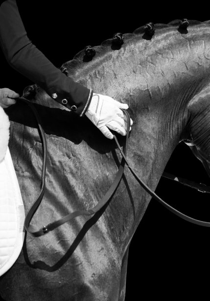

Most American dressage breeders have heard of BWP. Fewer understand what “BWP approved” actually means — or why it should, and shouldn't, shape a sire decision. The label can describe a three-year-old who sailed through every phase, or a stallion who cleared the veterinary bar and collected his approval on the thinnest acceptable margin. Both are in the database. This article is about telling them apart.
Why the BWP Label Carries Weight
The Belgian Warmblood studbook (Belgisch Warmbloed Paard) was formally established in 1955 — late by European standards. With no native saddle-horse tradition to protect, Belgian breeders imported the best stallions they could find from France, the Netherlands, and Germany, and selected hard for sport performance.
That open-studbook philosophy remains. BWP will approve a KWPN, Hanoverian, Holsteiner, or Oldenburg stallion if he meets the standard. Approval is about the horse in front of the jury, not breed purity. Despite its size, the studbook consistently ranks among the world's top five in the WBFSH standings — and has invested in a dressage track with an explicit Grand Prix breeding goal.
For North American breeders, the entry point is BWP-NAD. Its approvals follow the same veterinary and performance criteria as Belgium, passports are issued by the Belgian studbook, and North American approvals are recognized in Europe — a reciprocity that matters when your foal may one day need international papers.

Phase 1 — The Veterinary Examination
Phase 1 takes place at Ghent University's Faculty of Veterinary Medicine in Merelbeke. Radiographs cover the feet, fetlocks, knees, hocks, and stifles. Osteochondrosis in load-bearing joints, significant pathology, or reproductive abnormalities end the process there.
For dressage candidates, BWP goes further, adding radiographs of the lower cervical and first thoracic vertebrae — the region most involved in collection and in carrying a horse at Grand Prix level.
What it tells you: no obvious structural time bombs, and confirmed fertility. What it doesn't: how he moves, trains, or stamps his foals.
Phase 2 — Conformation and Free Movement
Held each January at Azelhof in Lier, Phase 2 is primarily for three-year-olds. The jury assesses conformation against the dressage breeding goal — an uphill build, a long front leg with a correct hind leg, presence, and a strong but not tight topline — then watches the stallion move free on the lunge.
With no rider to help or hinder, free movement shows genetic expression: an expressive trot, a hind leg that swings through from the hip, a clear three-beat uphill canter, and a clean, ground-covering walk. Rhythm matters as much as flair.
A spectacular trot with an irregular tempo is a fault, not a feature.
Stallions accepted at Phase 2 may cover up to five mares. If a stallion has a Phase 2 result but no Phase 3 record, ask why. It isn't a failure — but the evaluation that reveals rideability hasn't happened yet.
Phase 3 — Under Saddle
Phase 3, held in March, is where BWP earns its reputation. Each stallion shows his gaits under his own rider and under the studbook's designated rider. A horse who goes beautifully for a familiar rider and falls apart for a stranger is telling the judges something important about how genuine his movement is.
The jury looks for rhythm, suppleness through the back, balance, acceptance of the aids, and freedom from tension. A wringing tail or grinding jaw undoes a beautiful trot. Phase 3 shows the one thing earlier phases can't — the mind — and trainability is heritable. Full approval is granted here.
What It Means for Your Foal
Foals by BWP-approved stallions out of registered mares qualify for BWP foal books and passports, documentation with real market value for buyers heading to European keurings or FEI competition. BWP approval is also widely recognized by the Hanoverian Verband, KWPN, and other major studbooks — though you should always confirm the details for your mare's registry.
Finally, look past the approval year. A stallion who placed consistently in BWP's stallion competitions over several seasons is a different prospect from one who hasn't been seen since the March he was approved.
At Valdara, every cross starts with the mare, and every sire decision starts with his full record. If you'd like help evaluating a stallion for your mare, our breeding team is happy to talk it through.